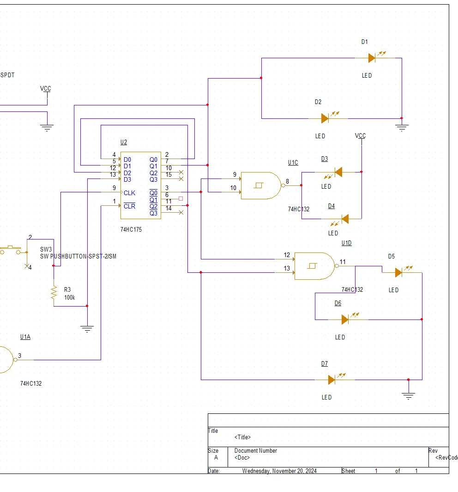
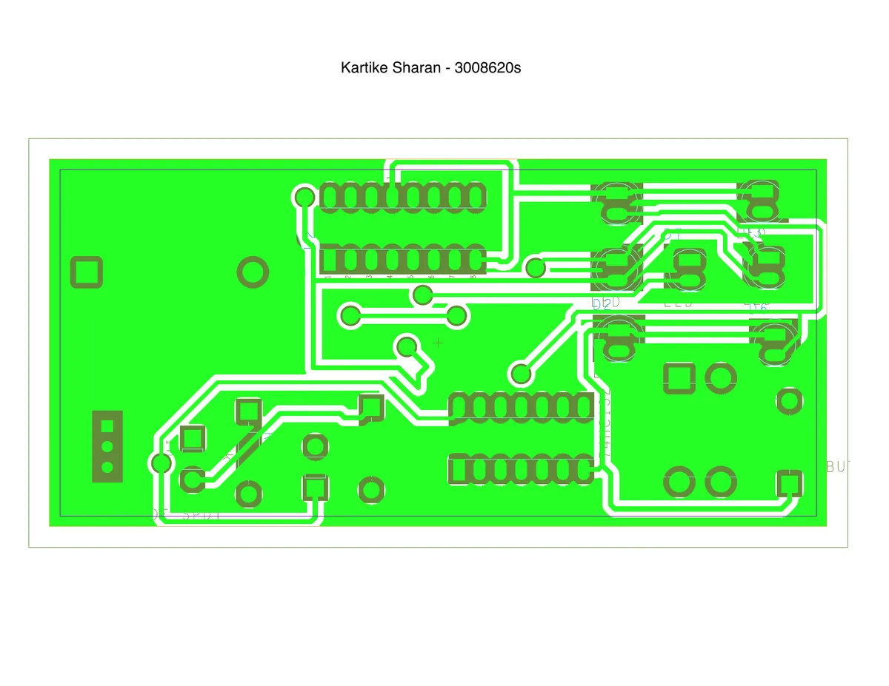
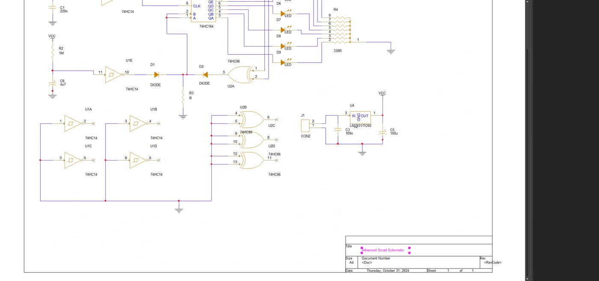
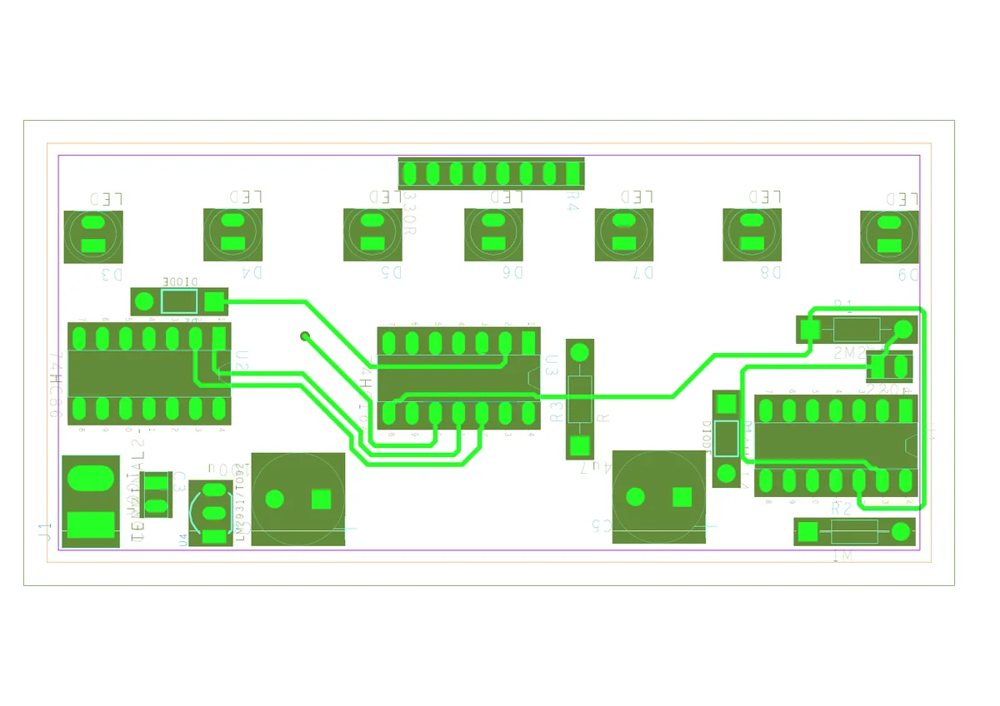

Electronic dice
I designed the circuit, drew the schematic in OrCAD Capture, laid out a double-sided board in Allegro, then built and tested it myself. It uses a 74HC132 quad Schmitt NAND and a 74HC175 quad D flip-flop to light seven LEDs. Testing with a bench supply and multimeter for shorts and open circuits found some diodes placed the wrong way round, which I corrected.


Logic board
A 22-part board with 74HC14 Schmitt inverters, a 74HC164 shift register, 74HC86 XOR gates, seven LEDs and an LM2931 regulator. After testing the first board I re-routed more of the IC connections onto the bottom layer to reduce the board's complexity.

